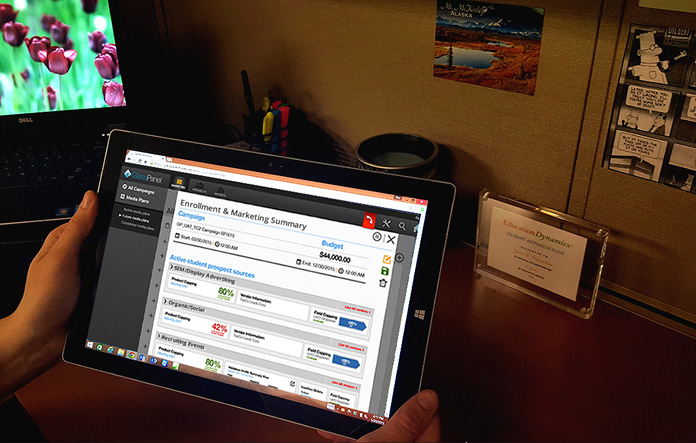
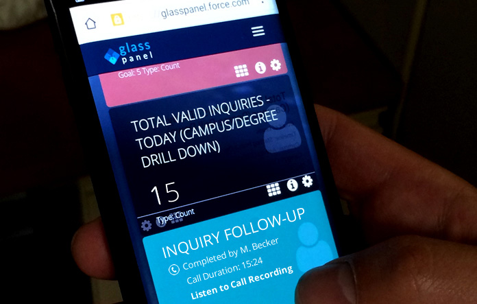

Heroku and Salesforce Help Universities Turn Student Prospects into Enrollments
GlassPanel combines marketing automation and CRM tools into one unified platform for college admissions staff.
Knowledge is power. The pursuit of knowledge in the form of higher education is fast becoming a basic requirement for working-age Americans. Information is also power, and college admissions staff know that having the right data can help them match prospective students with their programs. However, such teams often do not have ready access to the breadth of student information available, and must spend much of their time sourcing it from various systems. More time spent manually dealing with data means less time that the admission team can spend on their most important activity: connecting with future students.
From Smart Data to Smart Decisions
EducationDynamics, a leader in software solutions for educational institutions, launched GlassPanel in 2014 to help university admissions teams operationalize their recruitment process. The platform provides access to comprehensive information on prospective students and maintains a complete record of interactions from prospecting to enrollment. Marketers and recruiters collect, manage, and understand data so they can achieve their enrollment goals, make smart decisions, and save time and costs. It offers student inquiry management, marketing automation and analytics, and CRM features. Staff can spend less time finding students and more time engaging them and fostering meaningful relationships.
Student Prospecting on Heroku + Salesforce
When envisioning GlassPanel, the EducationDynamics team was faced with either building their own CRM platform in-house or integrating an off-the-shelf product. They engaged software development consultancy Cyrus Innovation to help them design and develop their new offering. The Cyrus team recommended using a professional-grade platform such as Salesforce to provide the kind of robust backend that would best support their institutional clients.
Heroku is the standard for Agile development and pushing out an application. We’ve used it for many of our clients. There are very few companies that are as easy to work with as Heroku. Tami Reiss, Chief Product Officer, Cyrus Innovation.
The project team chose Salesforce for their backend due to its versatility and flexibility, and it fit well with their CRM needs. This allowed them to accelerate development on the other aspects of their product that would bring unique value to their customers.

Leveraging the CRM capabilities of Salesforce allowed our team to focus on developing a truly differentiating product. Ray Mandaro, Sr. Director, Product Management & Marketing, GlassPanel
Choosing the Heroku platform to run their front-end apps was easy due to its seamless integration with Salesforce. Two primary interfaces run on Heroku: the visually elegant dashboard that displays real-time metrics and analytics, and the lead validation engine.
The entire system was built in 5 months using Apex, Javascript, and Groovy, along with several frameworks including VisualForce, Express.js, Socks.js, and Z-Schema. Their stack is comprised of Force.com/VisualForce, Node.js, and ElasticSearch for high-volume, real-time data modeling and analytics. They used the Heroku add-on Bonsai to support their ElasticSearch implementation. All data lives in Force.com and is accessed using the Salesforce API. The team will be integrating ExactTarget Marketing Cloud over the next few months. Other technologies included in their multifaceted system are DocuSign signature verification, Five9 cloud contact center, and Zopim Chat by Zendesk.
We’re processing a huge amount of data and updates in real-time. The combination of Heroku and Salesforce makes the process seamless and helps us to easily scale the business. It really adds the ‘wow factor’ for our customers. Ray Mandaro, Sr. Director, Product Management & Marketing, GlassPanel
App Experience
The GlassPanel web app allows universities to create customized microsites to support their lead generation and campaign activities. Students engage with the schools through their branded microsite, and student data flows into a number of CRM and marketing tools on the backend that help them optimize their recruitment process. Admissions staff can track their goals and and view metrics in real-time through a beautifully designed dashboard interface. Each data category is presented on it’s own “card” and color coding gives a visual indication of progress towards meeting goals.

For university marketers, a range of marketing automation tools helps them manage outreach and lead generation activities. GlassPanel streamlines campaign management by allocating and adjusting media spend and facilitating insertion orders with vendors. An ROI dashboard provides real-time analytics based on the media plan. Optimization tools surface high-performance vendors and help marketers run “what if” scenarios to gauge how changes could play out. GlassPanel collects information about prospects’ interests based on their online activity and can even automatically send messages through email and social channels.
For university recruiters, GlassPanel identifies students and manages lead flow by validating potential prospects and maintains a complete record of interactions from prospecting through enrollment. This allows teams to work directly with prospects throughout the recruitment process. A mobile app supports on-the-go recruiting activities. Staff can also take advantage of live chat for immediate customer support.
In addition to the core platform, GlassPanel provides additional resources to support their clients. The company offers customization, training, and maintenance services, as well as APIs that allow schools to integrate GlassPanel into the products they already use. GlassPanel also offers marketing, research, and web design consulting, as well as contact center capabilities to support outreach.
Now university marketers and recruiters can spend less time dealing with data - and more time acting on it.
More Stories


Have a question? Give our sales team a call: +1 (866) 278-1349.